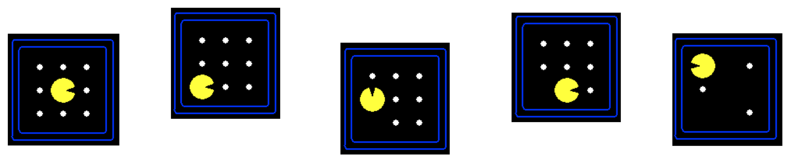
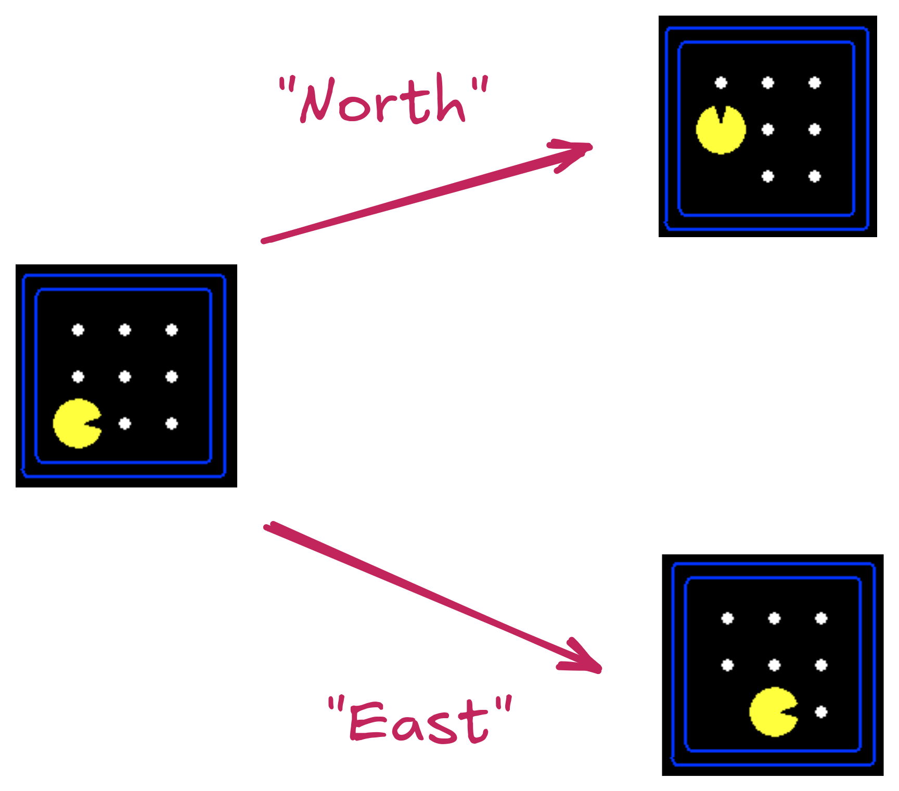
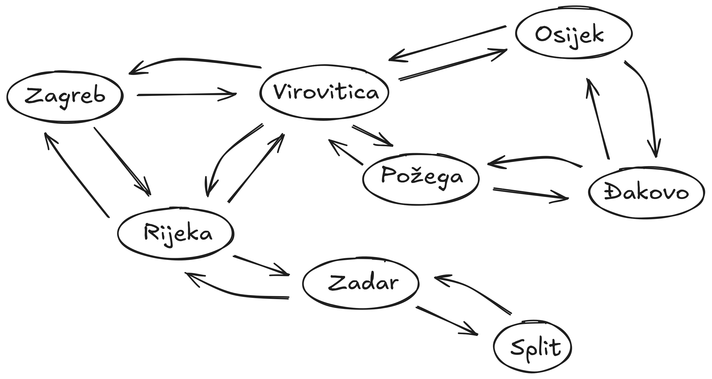
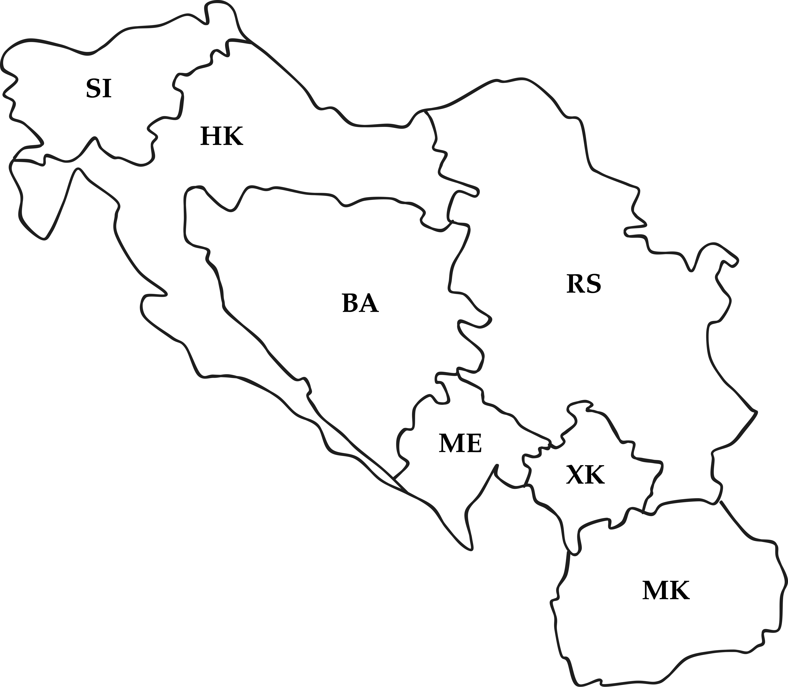
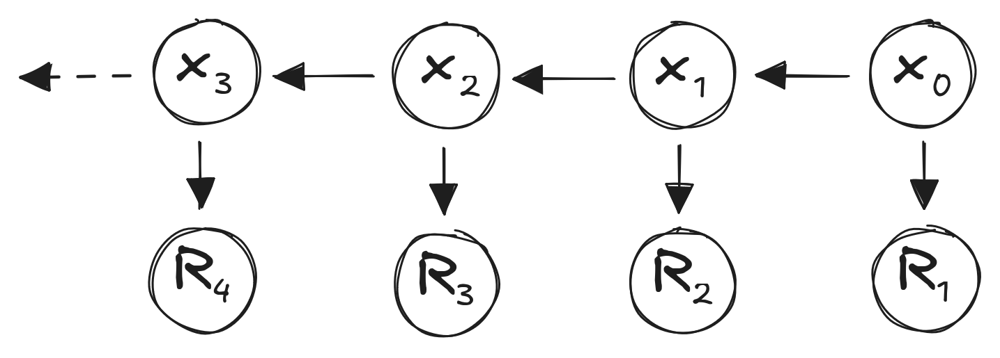

Review
CSCI 4511/6511
Announcements
- Final Exam: 24 Apr
- Project Milestone 2: 26 Apr
Final Exam
- In class 24 Apr
- 100 minutes
- 14 sides of notes (8.5”x11” or A4)
- Final exam grade can replace midterm grade if higher
- Midterm exam grade will not replace final exam grade
- Calculators permitted
- No networking capability
Reflex Agent
- Very basic form of agent function
- Percept \(\rightarrow\) Action lookup table
- Good for simple games
- Tic-tac-toe
- Checkers?
- Needs entire state space in table

Partially-Observable State
- Most real-world problems
- Sensor error
- Model error
- Reflex agents fail1
- Agent needs a belief state
State
What is the state space?
Search: Why?
- Fully-observed problem
- Deterministic actions and state
- Well defined start and goal
Other Applications
- Route planning
- Protein design
- Robotic navigation
- Scheduling
- Science
- Manufacturing
Not Included
- Uncertainty
- State transitions known
- Adversary
- Nobody wants us to lose
- Cooperation
- Continuous state
Search Problem
Search problem includes:
- Start State
- State Space
- State Transitions
- Goal Test
State Space:

Actions & Successor States:

State Space Graph
Search Trees
Graph:
Tree:

Let’s Talk About Trees
- For any non-trivial problem, they’re big
- (Effective) branching factor
- Depth
- Graph and tree both too large for memory
- Successor function (graph)
- Expansion function (tree)
How To Solve It
Given:
- Starting node
- Goal test
- Expansion
Do:
- Expand nodes from start
- Test each new node for goal
- If goal, success
- Expand new nodes
- If nothing left to expand, failure
Tree Search Algorithms
- BFS
- DFS
- UCS/Dijkstra
- A*
- Greedy searches
A* Search
- Include path-cost \(g(n)\)
- \(f(n) = g(n) + h(n)\)
- Complete (always)
- Optimal (sometimes)
- Painful \(O(b^m)\) time and space complexity
Choosing Heuristics
- Recall: \(h(n)\) estimates cost from \(n\) to goal

- Admissibility
- Consistency
Choosing Heuristics
- Admissibility
- Never overestimates cost from \(n\) to goal
- Cost-optimal!
- Consistency
- \(h(n) \leq c(n, a, n') + h(n')\)
- \(n'\) successors of \(n\)
- \(c(n, a, n')\) cost from \(n\) to \(n'\) given action \(a\)
Consistency
- Consistent heuristics are admissible
- Inverse not necessarily true
- Always reach each state on optimal path
Weighted A* Search
- Greedy: \(f(n) = h(n)\)
- A*: \(f(n) = h(n) + g(n)\)
- Uniform-Cost Search: \(f(n) = g(n)\)
…
- Weighted A* Search: \(f(n) = W\cdot h(n) + g(n)\)
- Weight \(W > 1\)
Iterative-Deepening A* Search
“IDA*” Search
- Similar to Iterative Deepening with Depth-First Search
- DFS uses depth cutoff
- IDA* uses \(h(n) + g(n)\) cutoff with DFS
- Once cutoff breached, new cutoff:
- Typically next-largest \(h(n) + g(n)\)
- \(O(b^m)\) time complexity 😔
- \(O(d)\) space complexity1 😌
Where Do Heuristics Come From?
- Intuition
- “Just Be Really Smart”
- Relaxation
- The problem is constrained
- Remove the constraint
- Pre-computation
- Sub problems
- Learning
Local Search
Uninformed/Informed Search:
- Known start, known goal
- Search for optimal path
Local Search:
- “Start” is irrelevant
- Goal is not known
- But we know it when we see it
- Search for goal
“Real-World” Examples
- Scheduling
- Layout optimization
- Factories
- Circuits
- Portfolio management
- Others?
Hill-Climbing
- Objective function
- State space mapping
- Neighbors
Variations
- Sideways moves
- Not free
- Stochastic moves
- Full set
- First choice
- Random restarts
- If at first you don’t succeed,
you failtry again! - Complete 😌
- If at first you don’t succeed,
The Trouble with Local Maxima
- We don’t know that they’re local maxima
- Unless we do?
- Hill climbing is efficient
- But gets trapped
- Exhaustive search is complete
- But it’s exhaustive!
- Stochastic methods are ‘exhaustive’
Simulated Annealing
- Doesn’t actually have anything to do with metallurgy
- Search begins with high “temperature”
- Temperature decreases during search
- Next state selected randomly
- Improvements always accepted
- Non-improvements rejected stochastically
- Higher temperature, less rejection
- “Worse” result, more rejection
Local Beam Search
Recall:
- Beam search keeps track of \(k\) “best” branches
Local Beam Search:
- Hill climbing search, keeping track of \(k\) successors
- Deterministic
- Stochastic
Simple Games
- Two-player
- Turn-taking
- Discrete-state
- Fully-observable
- Zero-sum
- This does some work for us!
Minimax
- Initial state \(s_0\)
- Actions(\(s\)) and To-move(\(s\))
- Result(\(s, a\))
- Is-Terminal(\(s\))
- Utility(\(s, p\))
More Than Two Players
- Two players, two values: \(v_A, v_B\)
- Zero-sum: \(v_A = -v_B\)
- Only one value needs to be explicitly represented
- \(> 2\) players:
- \(v_A, v_B, v_C ...\)
- Value scalar becomes \(\vec{v}\)
Minimax Efficiency
Pruning removes the need to explore the full tree.
- Max and Min nodes alternate
- Once one value has been found, we can eliminate parts of search
- Lower values, for Max
- Higher values, for Min
- Remember highest value (\(\alpha\)) for Max
- Remember lowest value (\(\beta\)) for Min
Solving Non-Deterministic Games
Previously: Max and Min alternate turns
Now:
- Max
- Chance
- Min
- Chance
😣
Expectiminimax
Constraint Satisfaction
- Express problem in terms of state variables
- Constrain state variables
- Begin with all variables unassigned
- Progressively assign values to variables
- Assignment of values to state variables that “works:” solution
More Formally
- State variables: \(X_1, X_2, ... , X_n\)
- State variable domains: \(D_1, D_2, ..., D_n\)
- The domain specifies which values are permitted for the state variable
- Domain: set of allowable variables (or permissible range for continuous variables)1
- Some constraints \(C_1, C_2, ..., C_m\) restrict allowable values
Constraint Types
- Unary: restrict single variable
- Can be rolled into domain
- Why even have them?
- Binary: restricts two variables
- Global: restrict “all” variables
Constraint Examples
- \(X_1\) and \(X_2\) both have real domains, i.e. \(X_1, X_2 \in \mathbb{R}\)
- A constraint could be \(X_1 < X_2\)
- \(X_1\) could have domain \(\{\text{red}, \text{green}, \text{blue}\}\) and \(X_2\) could have domain \(\{\text{green}, \text{blue}, \text{orange}\}\)
- A constraint could be \(X_1 \neq X_2\)
- \(X_1, X_2, ..., X_100 \in \mathbb{R}\)
- Constraint: exactly four of \(X_i\) equal 12
- Rewrite as binary constraint?
Assignments
- Assignments must be to values in each variable’s domain
- Assignment violates constraints?
- Consistency
- All variables assigned?
- Complete
Graph Representation I
Constraint graph: edges are constraints

Graph Representation II
Constraint hypergraph: constraints are nodes
Solving CSPs
- We can search!
- …the space of consistent assignments
- Complexity \(O(d^n)\)
- Domain size \(d\), number of nodes \(n\)
- Tree search for node assignment
- Inference to reduce domain size
- Recursive search
Inference
- Arc consistency
- Reduce domains for pairs of variables
- Path consistency
- Assignment to two variables
- Reduce domain of third variable
Ordering
- Select-Unassgined-Variable(\(CSP, assignment\))
- Choose most-constrained variable1
- Order-Domain-Variables(\(CSP, var, assignment\))
- Least-constraining value
- Tree-structure: Linear time solution
Logic
- \(\neg\)
- “Not” operator, same as CS (
!,not, etc.)
- “Not” operator, same as CS (
- \(\land\)
- “And” operator, same as CS (
&&,and, etc.) - This is sometimes called a conjunction.
- “And” operator, same as CS (
- \(\lor\)
- “Inclusive Or” operator, same as CS.
- This is sometimes called a disjunction.
Unfamiliar Logical Operators
- \(\Rightarrow\)
- Logical implication.
- If \(X_0 \Rightarrow X_1\), \(X_1\) is always True when \(X_0\) is True.
- If \(X_0\) is False, the value of \(X_1\) is not constrained.
- Logical implication.
- \(\iff\)
- “If and only If.”
- If \(X_0 \iff X_1\), \(X_0\) and \(X_1\) are either both True or both False.
- Also called a biconditional.
Knowledge Base & Queries
- We encode everything that we ‘know’
- Statements that are true
- We query the knowledge base
- Statement that we’d like to know about
- Logic:
- Is statement consistent with KB?
Entailment
- \(KB \models A\)
- “Knowledge Base entails A”
- For every model in which \(KB\) is True, \(A\) is also True
- One-way relationship: \(A\) can be True for models where \(KB\) is not True.
- Vocabulary: \(A\) is the query
Knowing Things
Falsehood:
- \(KB \models \neg A\)
- No model exists where \(KB\) is True and \(A\) is True
It is possible to not know things:1
- \(KB \nvdash A\)
- \(KB \nvdash \neg A\)
Conjunctive Normal Form
- Literals — symbols or negated symbols
- \(X_0\) is a literal
- \(\neg X_0\) is a literal
- Clauses — combine literals and disjunction using disjunctions (\(\lor\))
- \(X_0 \lor \neg X_1\) is a valid disjunction
- \((X_0 \lor \neg X_1) \lor X_2\) is a valid disjunction
Conjunctive Normal Form
- Conjunctions (\(\land\)) combine clauses (and literals)
- \(X_1 \land (X_0 \lor \neg X_2)\)
- Disjunctions cannot contain conjunctions:
- \(X_0 \lor (X_1 \land X_2)\) not in CNF
- Can be rewritten in CNF: \((X_0 \lor X_1) \land (X_0 \lor X_2)\)
Converting to CNF
- \(X_0 \iff X_1\)
- \((X_0 \Rightarrow X_1) \land (X_1 \Rightarrow X_0)\)
- \(X_0 \Rightarrow X_1\)
- \(\neg X_0 \lor X_1\)
- \(\neg (X_0 \land X_1)\)
- \(\neg X_0 \lor \neg X_1\)
- \(\neg (X_0 \lor X_1)\)
- \(\neg X_0 \land \neg X_1\)
Joint Distributions
- Distribution over multiple variables
- \(P(x, y)\) represents \(P\{X=x, Y=y\}\)
- Marginal distribution:
- \(P(x) = \sum_y P(x,y)\)
Independence
Conditional probability:
\[P(x | y) = \frac{P(x, y)}{P(y)}\]
Bayes’ rule:
\[P(x | y) = \frac{P(y | x)P(x)}{P(y)} \]
Conditional Independence
\[P(x | y) = P(x) \rightarrow P(x,y) = P(x) P(y)\]
- Two variables can be conditionally independent…
- … when conditioned on a third variable
Markov Chains
Markov property:
\(P(X_{t} | X_{t-1},X_{t-2},...,X_{0}) = P(X_{t} | X_{t-1})\)
“The future only depends on the past through the present.”
- State \(X_{t-1}\) captures “all” information about past
- No information in \(X_{t-2}\) (or other past states) influences \(X_{t}\)
State Transitions
Stochastic matrix \(P\)
\[ P = \begin{bmatrix} P_{1,1} & \dots & P_{1,n}\\ \vdots & \ddots & \\ P_{n, 1} & & P_{n,n} \end{bmatrix} \]
- All rows sum to 1
- Discrete state spaces implied
Stationary Behavior
- “Long run” behavior of Markov chain
\(x_0 P^k\) for large \(k\)
- “Stationary state” \(\pi\) such that:
\(\pi = \pi P\)
- Row eigenvector for \(P\) for eigenvalue 1
- 😌
Absorbing States
- State that cannot be “escaped” from
- Example: gambling \(\rightarrow\) running out of money
\(P = \begin{bmatrix} 0.5 & 0.3 & 0.1 & 0.1 \\ 0.3 & 0.4 & 0.3 & 0 \\ 0.1 & 0.6 & 0.2 & 0.1 \\ 0 & 0 & 0 & 1 \end{bmatrix}\)
- Non-absorbing states: “transient” states
Markov Reward Process
- Reward function \(R_s = E[R_{t+1} | S_t = s]\):
- Reward for being in state \(s\)
- Discount factor \(\gamma \in [0, 1]\)

\(U_t = \sum_k \gamma^k R_{t+k+1}\)
The Markov Decision Process
- Transition probabilities depend on actions
Markov Process:
\(s_{t+1} = s_t P\)
Markov Decision Process (MDP):
\(s_{t+1} = s_t P^a\)
Rewards: \(R^a\) with discount factor \(\gamma\)
MDP - Policies
- Agent function
- Actions conditioned on states
\(\pi(s) = P[A_t = a | s_t = s]\)
- Can be stochastic
- Usually deterministic
- Usually stationary
MDP - Policies
State value function \(U^\pi\):1
\(U^\pi(s) = E_\pi[U_t | S_t = s]\)
State-action value function \(Q^\pi\):2
\(Q^\pi(s,a) = E_\pi[U_t | S_t = s, A_t = a]\)
Notation: \(E_\pi\) indicates expected value under policy \(\pi\)
Bellman Expectation
Value function:
\(U^\pi(s) = E_\pi[R_{t+1} + \gamma U^\pi (S_{t+1}) | S_t = s]\)
Action-value fuction:
\(Q^\pi(s, a) = E_\pi[R_{t+1} + \gamma Q^\pi(S_{t+1}, A_{t+1}) | S_t = s, A_t =a]\)
Bellman Equation
\[U^*(s) = \max_a R(s, a) + \gamma \sum \limits_{s'} T(s' | s, a) U^*(s')\]
Bellman Equation
\[Q^*(s, a) = R(s, a) + \gamma \sum \limits_{s'} T(s' | s, a) \max_a Q^*(s', a')\]
How To Solve It
- No closed-form solution
- Optimal case differs from policy evaluation
Iterative Solutions:
- Value Iteration
- Policy Iteration
Reinforcement Learning:
- Q-Learning
- Sarsa
Model Uncertainty
Action-value function:
\(Q(s, a) = R(s, a) + \gamma \sum \limits_{s'} T(s' | s, a) U(s')\)
we don’t know \(T\):
\(U^\pi(s) = E_\pi \left[ r_t + \gamma r_{t+1} + \gamma^2 r_{t+2} + \gamma^3 r_{t+3} + ...|s \right]\)
\(Q(s, a) = E_\pi \left[ r_t + \gamma r_{t+1} + \gamma^2 r_{t+2} + \gamma^3 r_{t+3} + ...|s,a \right]\)
Temporal Difference (TD) Learning
- Take action from state, observe new state, reward
\(U(s) \gets U(s) + \alpha \left[ r + \gamma U(s') - U(s)\right]\)
- Update immediately given \((s, a, r, s')\)
- TD Error: \(\left[ r + \gamma U(s') - U(s)\right]\)
- Measurement: \(r + \gamma U(s')\)
- Old Estimate: \(U(s)\)
RL Methods
- Q-Learning
- Sarsa
- Eligibility traces
RL Methods
Q-Learning:
\(\quad \quad Q(s,a) \gets Q(s,a) +\alpha \left[R + \gamma \max \limits_{a'} Q(s', a') - Q(s,a)\right]\)
Sarsa:
\(\quad \quad Q(s,a) \gets Q(s,a) +\alpha \left[R + \gamma Q(s', a') - Q(s,a)\right]\)
Sarsa-\(\lambda\):
\(\quad \quad \delta = R + \gamma Q(s',a') - Q(s,a)\) \(\quad \quad Q(s,a) \gets Q(s, a) + \alpha \delta N(s,a)\)
Monte Carlo Tree Search - Search

If current state \(\in T\) (tree states):
- Maximize: \(Q(s,a) + c\sqrt{\frac{\log N(s)}{N(s,a)}}\)
- Update \(Q(s,a)\) during search
Monte Carlo Tree Search - Expansion
- State \(\notin T\)
- Initialize \(N(s,a)\) and \(Q(s,a)\)
- Add state to \(T\)
Monte Carlo Tree Search - Rollout
- Policy \(\pi_0\) is “rollout” policy
- Usually stochastic
- States not tracked
References
Stuart J. Russell and Peter Norvig. Artificial Intelligence: A Modern Approach. 4th Edition, 2020.
Richard S. Sutton and Andrew G. Barto. Reinforcement Learning: An Introduction. 2nd Edition, 2018.
Mykal Kochenderfer, Tim Wheeler, and Kyle Wray. Algorithms for Decision Making. 1st Edition, 2022.
UC Berkeley CS188
Stanford CS234 (Emma Brunskill)
Stanford CS228 (Mykal Kochenderfer)